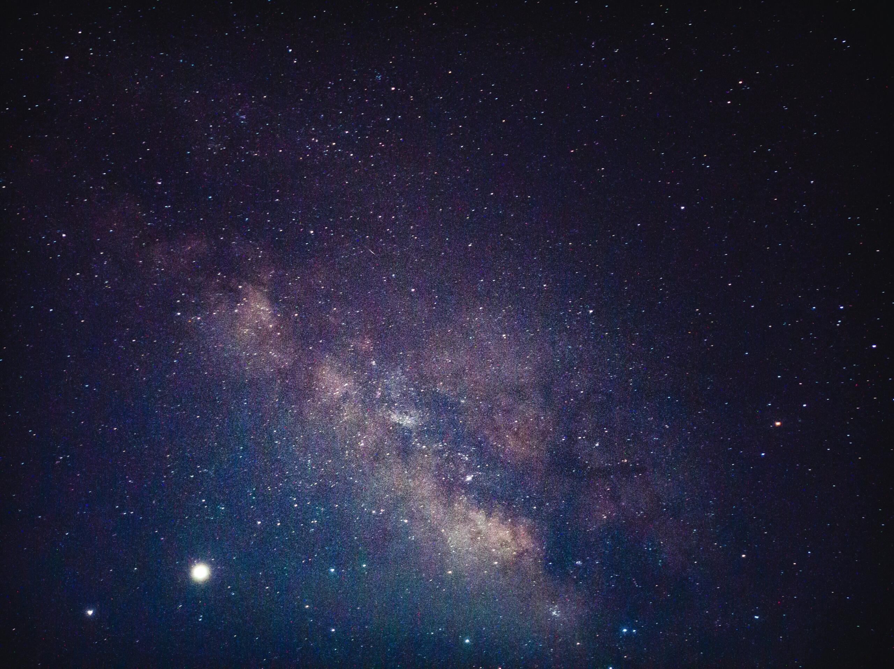

الأرشيف الفضائي • معارض الأجرام
ما تركناه خلفنا.
متحف رقمي للآثار والمركبات والمقتنيات البشرية التي ما زالت على سطح القمر والمريخ، مع دليل شامل للمجموعة الشمسية.

التصنيف الرئيسي
اختر وجهتك
كل قاعة تحكي فصلاً من فصول تطلعنا نحو الفضاء.
المعرض الشامل
مختارات من العالم الآخر
جاليري الكون • من المركز إلى الحافة
معرض المجموعة الشمسية
رحلة بصرية ومعلوماتية تبدأ من نجمنا الأم (الشمس) وتمر بجميع الكواكب الثمانية بالترتيب وصولاً إلى نبتون.
EDU MISSION • THE OTHER WORLD MUSEUM
رحلة استكشاف الآثار الفضائية
اختبر معلوماتك التاريخية والعلمية وقُد مركبتك عبر المدارات الفضائية وصولاً إلى بوابة الفوز.
THE OTHER WORLD
لوحة القيادة
المرحلة:
1 / 5
الدرجة:
0
الإجابات الصحيحة:
0
🚀
تحدي المدار والآثار الفضائية
قُد مركبتك من اليسار إلى بوابة الوصول الخضراء في اليمين عبر 5 مراحل متصاعدة الصعوبة.
⚠️ اصطدام بحاجز مداري — أجب للمتابعة
🏆🚀🎉
أنجزت المهمة بنجاح باهر!
لقد اجتزت جميع المدارات الفضائية الخمسة بنجاح
الدرجة النهائية
0
إجابات صحيحة
0
التقييم
رائد فضاء
التحكم: استخدم الأسهم أو W A S D للوصول إلى المنطقة الخضراء.
شاهد القصة، أو استمع إليها.
كل قطعة مخلفة على سطح الفضاء هي قصة شهادة محفورة، روتها خطى الإنسان في التاريخ العريق.